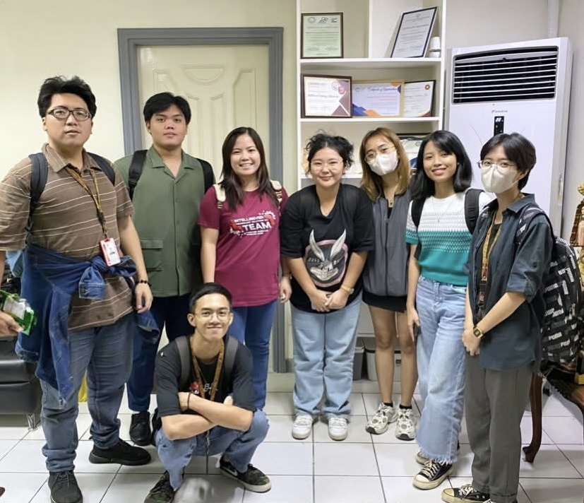
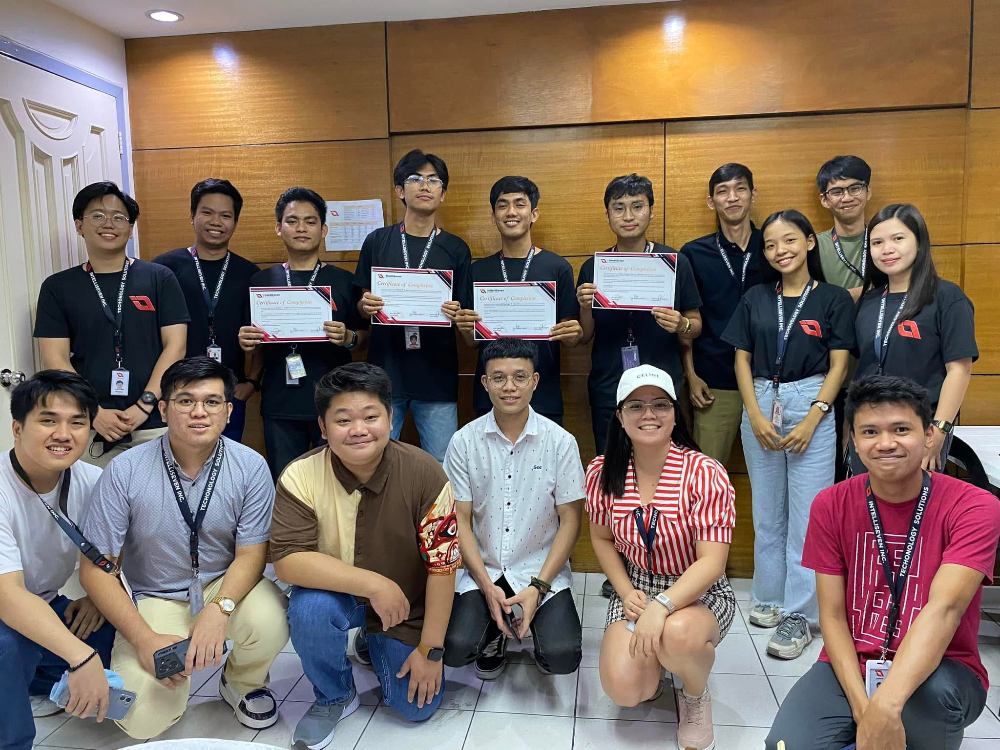
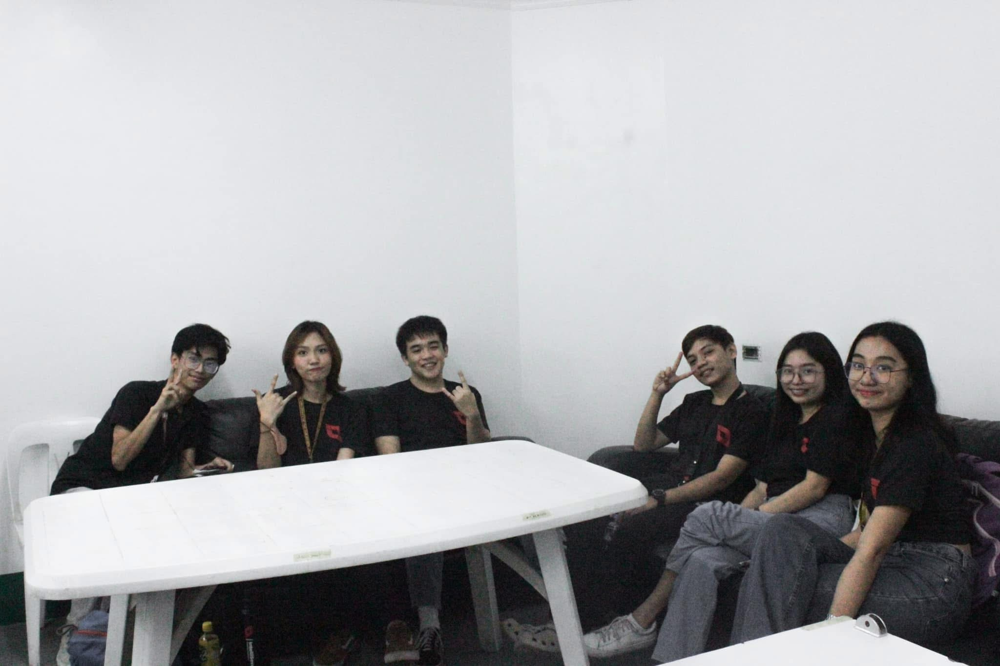
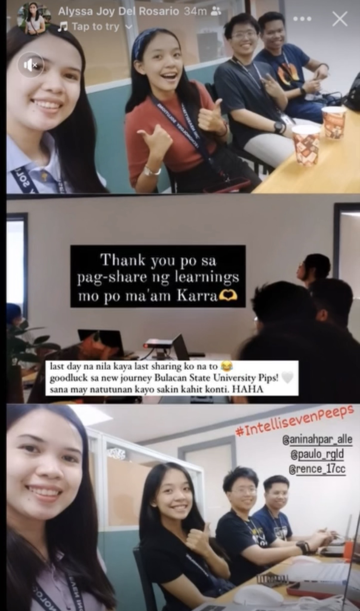
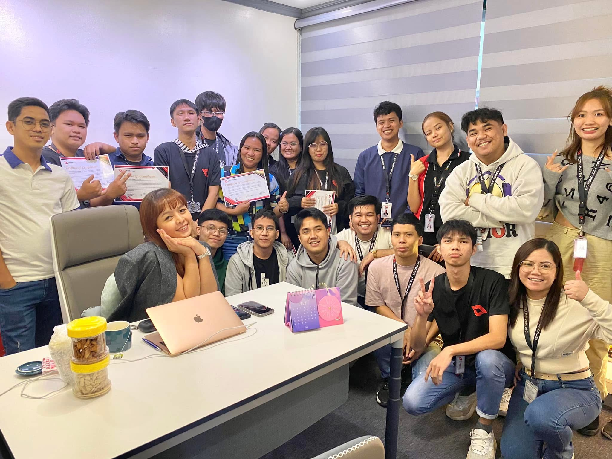

Managing On-the-Job Trainees (OJTs) from different universities has been one of the most meaningful and eye-opening parts of my professional journey. Each batch brings fresh perspectives, unique personalities, and a shared eagerness to learn—reminding me why mentorship matters so much in the IT industry.
Over the years, I’ve had the privilege of mentoring students from a wide range of institutions, including the Polytechnic University of the Philippines (PUP), Bulacan State University – Main Campus, BulSU Sarmiento Campus, Rizal Technological University (RTU), Quezon City University (QCU), Camarines Sur Polytechnic Colleges (CSPC), the Technological Institute of the Philippines (TIP), STI College, AMA Computer College, and Immaculate Conception College of Taguig.
Each school brings its own culture and strengths, but one thing remains the same: every student comes in with curiosity, determination, and the desire to grow in the IT field.

Students from technical universities, state colleges, and private institutions all arrive with the same mixture of excitement and nerves. They’re eager to apply what they’ve learned in the classroom but unsure of what the real IT world looks like. That’s where I come in—not just as a mentor who teaches skills, but as someone who guides them through the realities and rhythms of the industry.
From Classroom Concepts to Real IT Challenges
University lessons provide the foundation—coding basics, UI/UX principles, technical concepts, and project fundamentals. But nothing compares to the real environment where deadlines actually matter, client requirements constantly evolve, teams rely on effective communication, and tools and workflows must be followed with precision.
I introduce OJTs to real projects early on. Instead of simulated tasks, they work on meaningful outputs: UI/UX designs, prototypes, front-end components, documentation, and even user flows. Through this, they learn that IT isn’t just about tools or code—it’s about solving problems with clarity, empathy, and intention.

Creating a Safe Space for Growth
One of the most important lessons I instill is that mistakes are part of the process. The goal of OJT isn’t to be perfect—it’s to grow.
I make sure every trainee feels comfortable asking questions, sharing drafts, and admitting when something confuses them. A safe learning environment encourages curiosity and builds their confidence. It also teaches them that communication is just as valuable as technical proficiency—because in the IT world, great ideas are born through collaboration.

To help them adapt to industry expectations, I expose them to actual workflows. Weekly check-ins and updates, figma design reviews, standups and progress reporting, file organization and proper documentation, presentations of their work to mentors or teammates.
These routine practices may seem simple, but they shape discipline. Students begin understanding how tasks move—from ideation, to revision, to final execution. They learn resilience, adaptability, and the importance of thinking ahead.

Every batch of trainees starts differently. Some are confident and eager to lead. Others are quiet observers, unsure where they fit. Some are talented but hesitate to show their ideas. But by the end of their OJT, the transformation is undeniable. Their design sense becomes sharper, their code becomes cleaner, their communication becomes more intentional, their problem-solving becomes more structured, And most importantly—their confidence begins to shine.

Seeing their growth is a reward on its own. Every milestone, every improvement, every breakthrough reminds me why mentorship matters. And as mentors, we have the privilege of guiding them across that bridge—one project, one lesson, and one breakthrough at a time.
Visit Intelliseven website: intelliseven.com.ph
Leave a comment